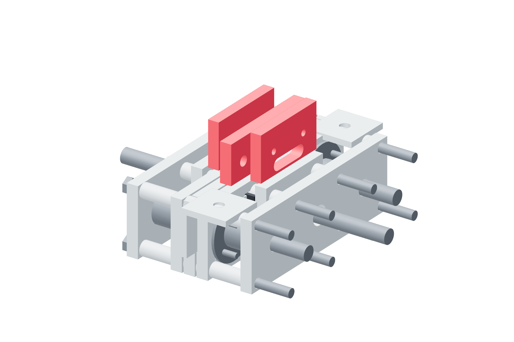

Screw drives / calibration fixture53 / 179
Separate the two force-link reactions
The gauge must read the entire applied output force. Its test platen touches the fixed cage while the quill pusher contacts only the moving shuttle.
Addforce-test-platen · loose link · controlled quill pusher
Tools / setupDrill motor unplugged · quill indicator · continuity meter

- Attach the test platen at the fixed cage outer ties only; keep its central clearance open.
- Align the gauge head with that reaction platen. The upper pusher bears only on the shuttle output attachment.
- Advance manually while recording force, shuttle motion and NC transition; lock the quill for a static reading.
- Reverse the loose link and repeat the arrangement for the opposite direction.
Ready when
Cage reaction and shuttle load form one series path through the gauge, with no clamp/platen bridging the moving joint. A rigid bypass or off-axis load invalidates the reading. Rebuild the controlled metal contact path before accepting a trip force.